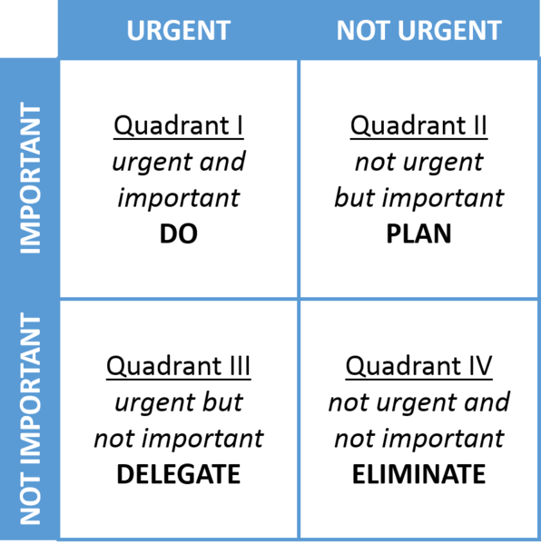
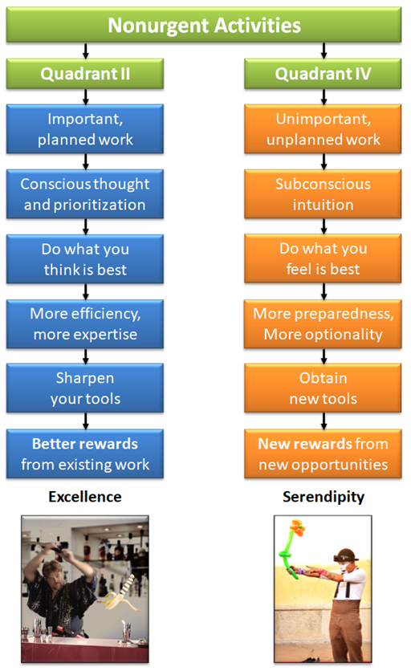
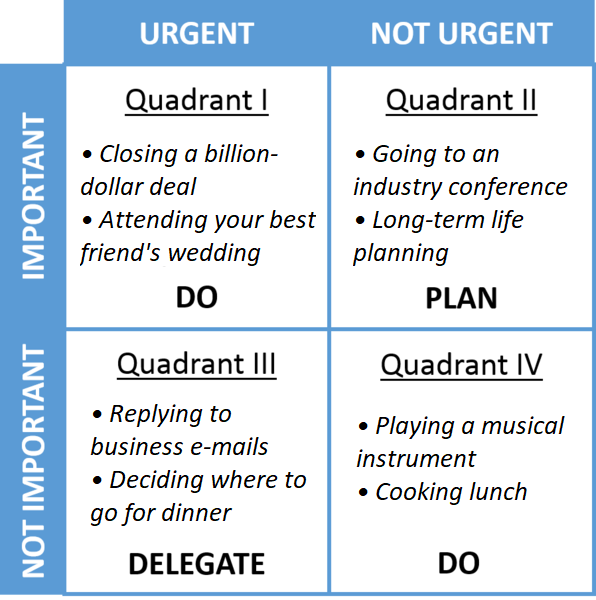

Why some people never get lucky
"When I got tired, I slept. When I got hungry, I ate." - Forrest Gump
Here's the famous Eisenhower matrix:
This matrix says to sort your activities into four quadrants and then handle them accordingly. This maximizes your productivity. It's important to do Quadrant II activities, even though it's tempting to just do urgent things.
Some examples of Quadrant II (nonurgent and important) activities are going to a networking event or industry conference, growing your professional network on Linkedin, having informational interviews with experts in your field, and getting an MBA at a top school. Quadrant II is needed because it improves your long-term effectiveness.
Eliminate Quadrant IV because it's nonurgent and unimportant.
Quadrant II isn't enough
So you avoided the urgency trap of spending too much time in Quadrants I and III. But by neglecting Quadrant IV activities, you've fallen into the importance trap! Ambitious people should be spending much of their time in Quadrant IV.
Examples of such activities would be:
- Playing a musical instrument
- Emailing people you don't know to strike up a conversation
- Cooking food
- Blogging
These may seem frivolous, but Quadrant IV is an important complement to Quadrant II.
Quadrant II builds up your existing strengths, while Quadrant IV exposes you to new abilities and trains you in less immediately needed skills. These "unimportant" activities are chosen by your subconscious. Your subconscious knows what you need.[1] Your conscious brain is much worse than your subconscious at identifying and prioritizing. That's why Quadrant IV activities invariably turn out to be useful, even though it doesn't seem like it when you're doing them.[2]
Consider...
- Is playing a musical instrument pointless, or will it improve your emotional stability?
- Is emailing a stranger a waste of time, or could it open doors you didn't even know about?
- Is cooking your own food inefficient, or does it train you in continuous improvement?
- Is blogging stupid in 2021? Maybe...[3]
Serendipity
Here's what the decision matrix should actually be like:
Over time, nonurgent and unimportant activities create serendipity; an opportunity arises and you have the ability to take advantage of it. Time spent in Quadrant IV increases the chances that you have the combination of skills and circumstance needed to grasp an opportunity.
If you feel like your achievements aren't proportional to your hard work, consider whether you need more Quadrant IV in your life. As the famous phrase goes, "The peerless samurai walks the path of hardship, the light-hearted fool walks the path of providence."[4]
1 ↩ An important caveat: to benefit from Quadrant IV activities, you must avoid superstimuli. Examples of superstimuli are heroin, video games, junk food. Superstimuli will hijack your subconscious and you won't get serendipity.
2 ↩ This is also why advice like "cold email one person a day if you want to build a great network" is useless; it's forcing Quadrant IV activities into Quadrant II, and overruling your subconscious.
3 ↩ I'm editing this in 2024, and I can now say that blogging has probably opened the most doors in my life and has been the single most transformative hobby I've ever done.
4 ↩ A lot of people have asked me where this quote comes from. It's been three years since I wrote it, so I can now reveal... I made it up.